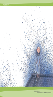

窗外放晴了。屋内仍继续下雨。我微笑。并不等于我快乐。我撑伞，并非只是为了避雨。你永远都不懂我在想什么。我想拥抱每个人，但我得先温暖我自己，请容忍我。因为我已在练习容忍你。我的心常下雪，不管天气如何。它总是突然的冻结，无法商量。我望向繁花盛开的世界。，固定缺席。我的心开始下雪，雪无声的覆盖了所有。湮灭了迷茫，骄傲和哀痛。当一切归于寂静，世界突然变的清凉明朗。所以，别为我忧伤，我有我的美丽。它正要开始。
人生就像剥洋葱，总有一片会让人流泪。月光清冷的那个晚上我爬上高树。森林一片寂静，我真想坐在树上慢慢等待直到青涩的果子转为艳红。
青蛙跳上正要沉没的月亮,忧伤地说: "怎么办?美丽的公主就要亲吻我了." "你不想变成英俊的王子吗?”月亮不解的问。"但愿这不会真的发生!我希望它只是个荒唐的童话故事,因为我还是比较喜欢我的癞蛤蟆小女朋友."
疲惫人生：大家都说做人好累，我也这么觉得。要戴上假发、戴上面具、戴上眼镜、戴上笑容。穿上内衣、穿上外衣、再穿上外套，穿上内裤、穿上外裤、再系上皮带，穿上袜子、穿上鞋子、再绑上鞋带，天天都得如此，直到上天堂。
0
one two three fore five＂world hello world hello world hello world hello world hello world hello world hello world hello world hello world hello world＂
掉落深井，我大声呼喊，等待救援…… 天黑了，黯然低头，才发现水面满是闪烁的星光。 我总是在最深的绝望里，遇见最美丽的惊喜。 . 所有的悲伤，总会留下一丝欢乐的线索。  所有的遗憾，总会留下一处完美的角落。 我在冰封的深海，找寻希望的缺口。却在午夜惊醒时，蓦然瞥见绝美的月光。 没有阻力的世界，少了感人的戏剧张力。 我们体会到的感动都是自己生命里幽微的细部。
岁月 有时，一分钟很长， 有时，却又很短。 有时我可以了解这世界， 有时却一点也不懂。 爱你时，一切美好， 怨你时，人生灰暗。 为何欢乐过后， 只剩下一片悲凉？ 你也寂寞，世界上每个人都寂寞，只 是大家的寂寞都不 同吧。 你当然一眼就看出，我永远找不到我要找的人。 我带错了狗，带错了眼镜，带错了帽子。 更可疑的是家里炉子上还兴高采烈地炖着鲜牛肉。 我并没有将或关上。 你当然一眼就看出，我根本不想，找到我要找的人 窗外放晴了，屋内仍继续下雨。我微笑，并不等于我快乐。我撑伞，并非只是为了避雨。
我带错了狗，带错了眼镜，带错了帽子。 更可疑的是家里炉子上还兴高采烈地炖着鲜牛肉。 我并没有将或关上。 你当然一眼就看出，我根本不想，找到我要找的人